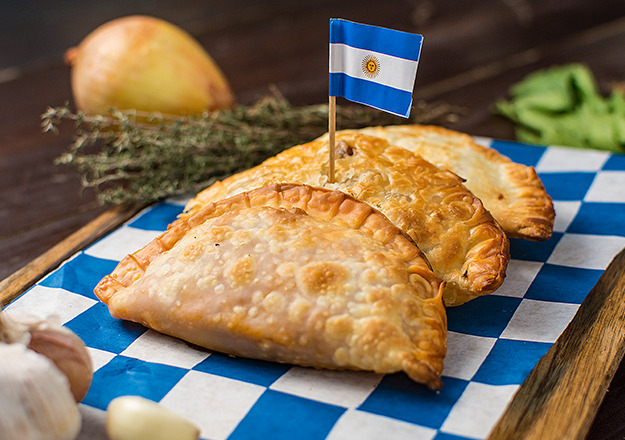
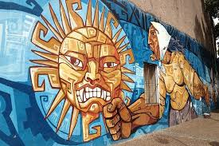
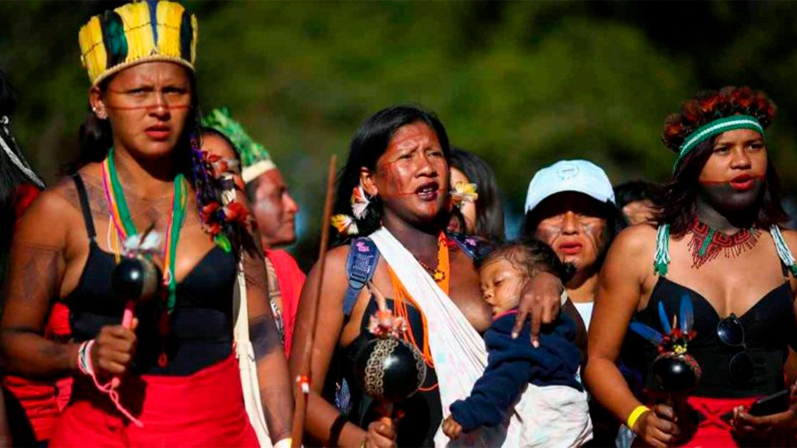

Curiosidades Gerais Sobre a Argentina

|
A cultura do Tango é uma parte fundamental da identidade argentina, originando-se nos bairros de Buenos Aires. Esta dança sensual e emocional é uma expressão artística única que reflete a paixão e a alma do povo argentino. |
|  | A gastronomia argentina, uma fusão de influências europeias e indígenas, reflete a diversidade regional. Pratos como o churrasco (asado), empanadas e o doce de leite são populares. O asado é uma tradição de churrasco, enquanto as empanadas são petiscos comuns. O doce de leite é uma sobremesa tradicional. |
|  | Explore a vibrante cena de arte de rua na capital argentina, com murais coloridos e grafites que adornam os bairros da cidade. Esta forma de expressão artística adiciona uma atmosfera única à paisagem urbana de Buenos Aires, refletindo as diversas culturas e movimentos sociais da cidade. |
Discuta a paixão dos argentinos pelo futebol e pelo polo, dois esportes que desempenham um papel significativo na cultura do país. O futebol é mais do que um esporte na Argentina, é uma paixão nacional, com torcidas fervorosas e rivalidades históricas entre os clubes. O polo, por sua vez, é um esporte de elite associado à aristocracia argentina, com torneios de renome mundial e uma longa tradição no país. |
|  | Destaque a rica herança cultural dos povos indígenas da Argentina e sua contribuição para a identidade nacional. Os povos indígenas da Argentina, como os Mapuches, os Guaranis e os Qom, têm uma história rica e diversificada que remonta a milhares de anos. Sua influência pode ser vista na culinária, na música, nas artes e nas tradições do país, enriquecendo a identidade nacional e promovendo a preservação da cultura indígena. |